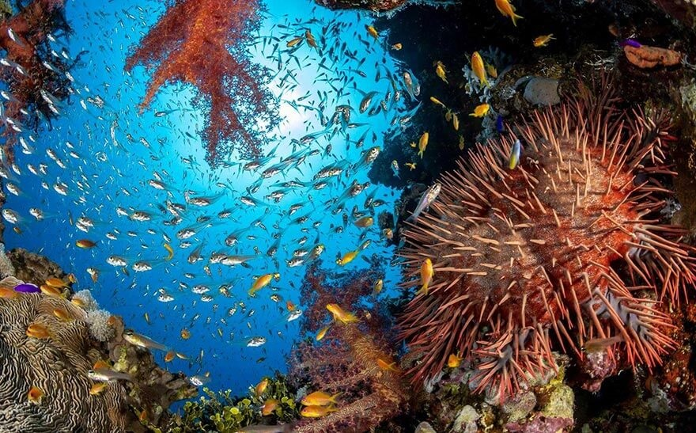
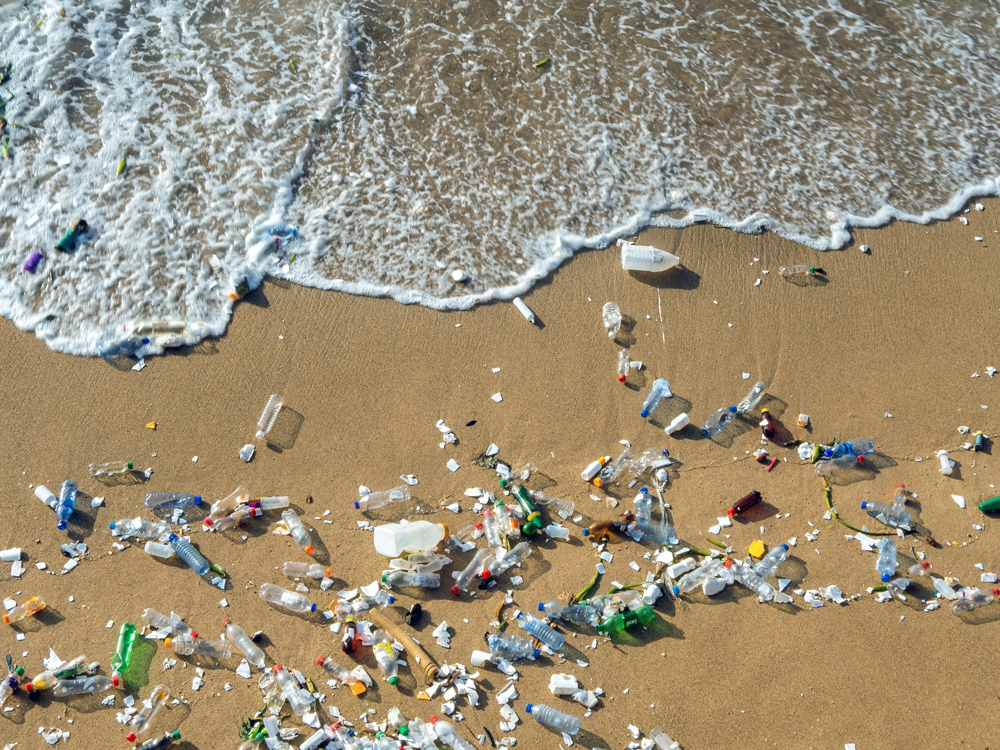
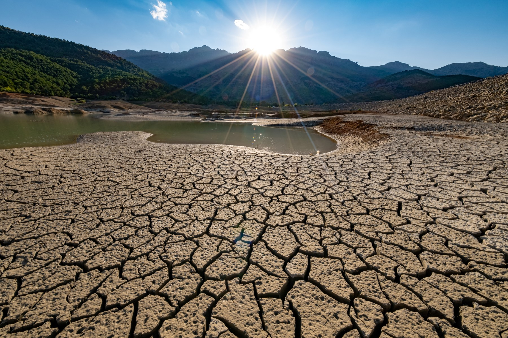
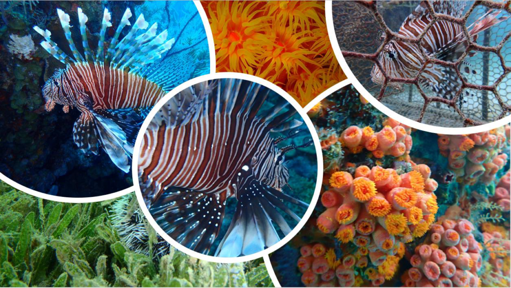
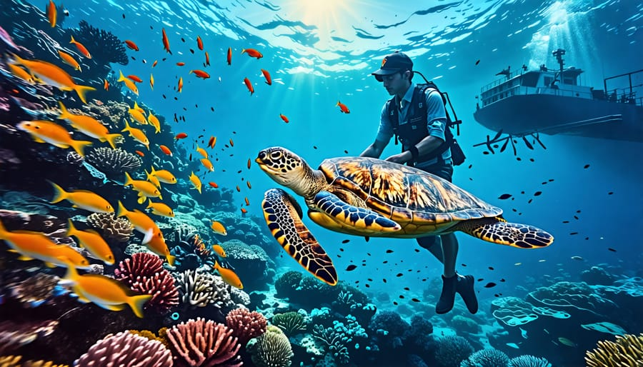

What is Marine Biodiversity?
Marine biodiversity refers to the variety of life in our ocean. It includes all animals, plants and microorganisms living in our ocean, from barnacles to whales to coral reefs. The term is also used to describe the abundance of species living in an area.
Some places have such a large variety of different and rare species; that they are referred to as biological “hotspots”. These areas of high biodiversity generally support important biological processes such as spawning, nurseries, or feeding areas. Some also have species not found anywhere else in the world.

The Importance of Marine Biodiversity
Our ocean contains 80% of the world's biodiversity, and so the ocean is essential to our existence.
Marine biodiversity allows nature in our ocean to be productive, resilient and adaptable to environmental changes. Marine biodiversity can prevent one species’ extinction from causing wider negative impacts on a marine ecosystem.
Each species in the ocean has a particular role to play, whether that is marine worms converting organic material into carbon dioxide for marine plants to photosynthesise or sharks controlling prey populations. Some species play similar roles in an ecosystem, so if one species becomes extinct, another will be able to carry out the same function or ‘service’.
Risk to Marine Biodiversity
Fishing has had the greatest impact on marine biodiversity in the last 50 years.
Major risks to marine biodiversity include:
-
Overfishing

- Pollution 
- Climate change 
- Invasive species 
- Other human-related impacts 
Solutions to Protect Marine Biodiversity
- Choose sustainable seafood: the top action recommended by the Biodiversity Council is to look for the MSC blue fish tick label on seafood products
- Use less plastic: be mindful about single-use plastic
- Sustainable Fishing Practices: Implementing regulations to prevent overfishing and protect vulnerable species.
- Pollution Control: Reducing plastic waste and chemical runoff into the ocean.
- Climate Action: Mitigating climate change through global cooperation and sustainable practices.
- Community Engagement: Involving local communities in conservation efforts and promoting awareness.